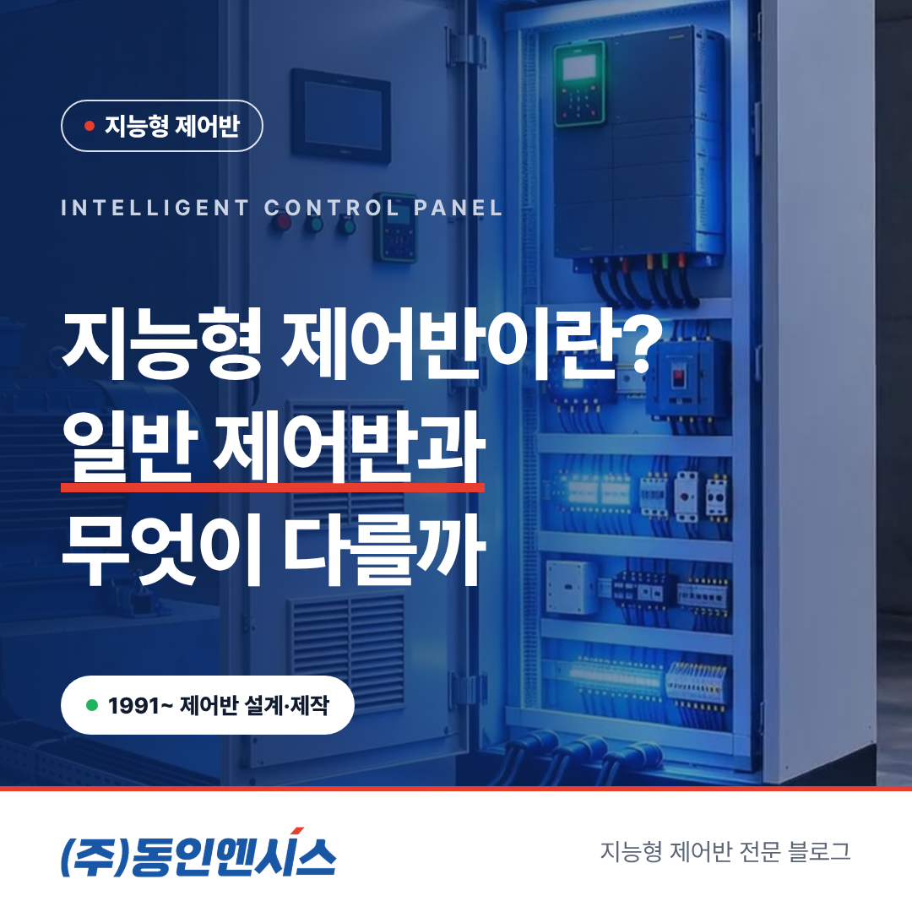
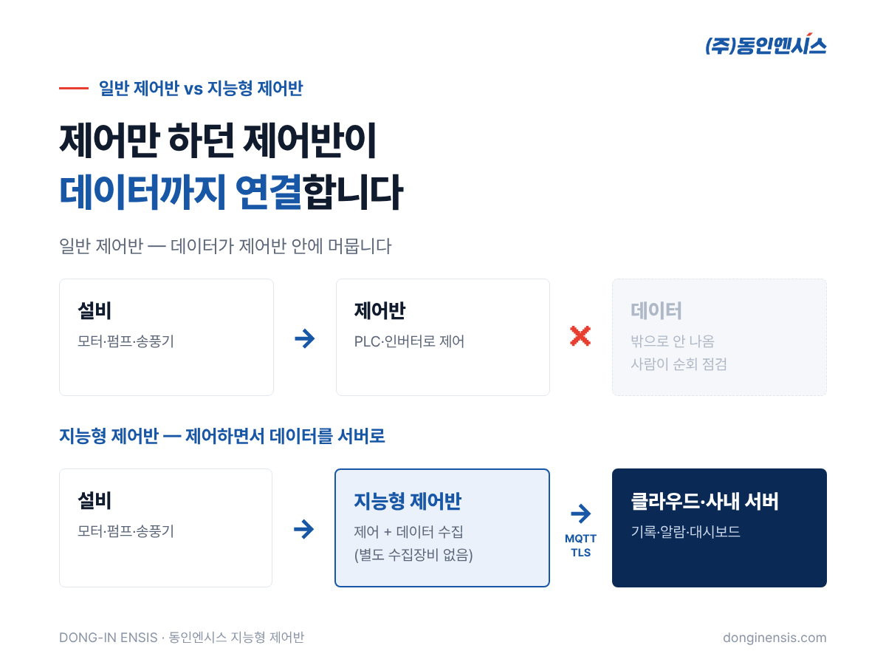
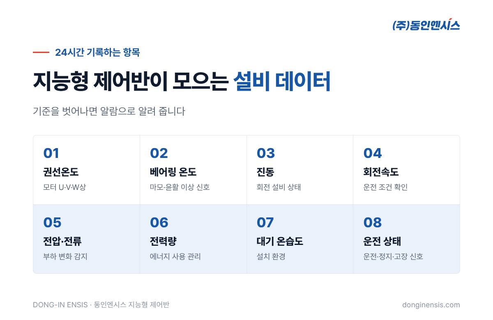
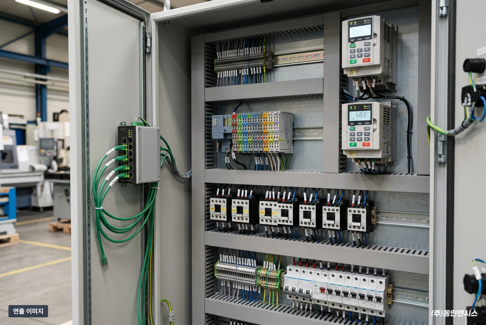
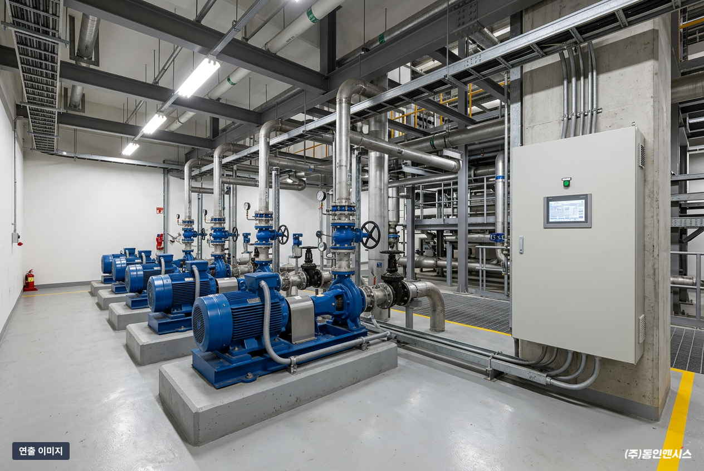
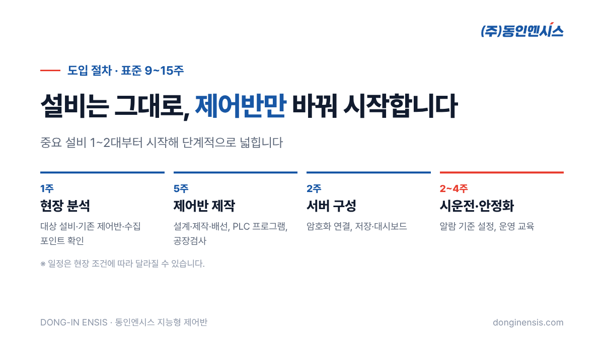
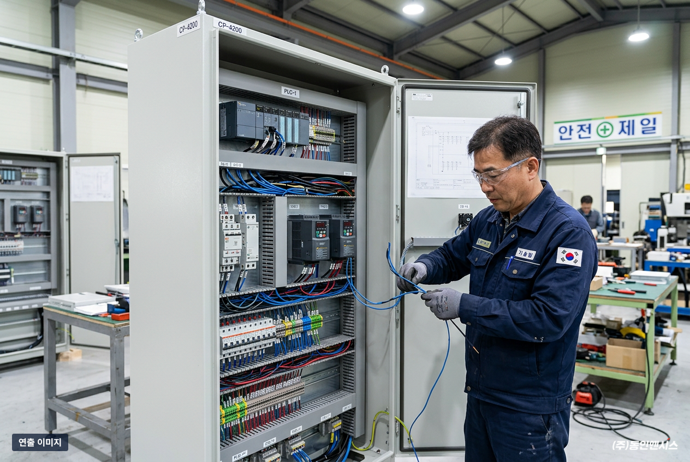

공장마다 제어반은 있습니다. 펌프, 송풍기, 압축기를 돌리는 그 회색 함 말입니다. 그런데 요즘 "지능형 제어반"이라는 말이 자주 들립니다. 1991년부터 부산에서 제어반을 설계·제작해 온 동인엔시스가, 지능형 제어반이 일반 제어반과 무엇이 다른지, 그리고 왜 설비 관리의 출발점이 되는지 정리해 보겠습니다.
일반 제어반의 역할은 분명합니다. PLC와 인버터로 모터를 켜고 끄고, 속도를 맞추고, 이상이 생기면 멈춥니다.
문제는 그 과정에서 생기는 데이터입니다. 모터가 몇 도까지 올라갔는지, 전류가 평소보다 많이 흐르는지 같은 정보는 PLC와 인버터 안에 분명히 있습니다. 하지만 대부분 제어반 밖으로 나오지 않습니다. 그래서 설비 상태를 알려면 사람이 직접 돌면서 확인하거나, 데이터를 모으는 장비를 따로 붙여야 했습니다.
예전에는 이 방식으로도 충분했습니다. 숙련된 설비 담당자가 매일 현장을 돌며 소리와 열, 냄새로 이상을 알아챘기 때문입니다. 하지만 지금은 사정이 다릅니다. 점검 인력은 줄고, 설비는 늘고, 설비 한 대가 갑자기 멈추면 라인 전체가 서는 공장도 많습니다. 사람의 감각에만 기대기 어려워진 만큼, 설비가 스스로 상태를 기록하고 알려 주는 구조가 필요해졌습니다.

지능형 제어반은 설비를 제어하는 바로 그 자리에서 운전 데이터를 함께 수집합니다. 저희 동인엔시스 지능형 제어반이 기록하는 항목은 다음과 같습니다.

이 값들을 24시간 기록하고, 미리 정한 기준을 벗어나면 알람으로 알려 줍니다. 예를 들어 베어링 온도가 평소보다 꾸준히 오르고 있다면, 설비가 멈추기 전에 점검 일정을 잡을 수 있습니다.

모터로 움직이는 설비라면 대부분 적용할 수 있지만, 특히 효과가 큰 경우가 있습니다.
또 다른 차이는 연결 방식입니다. 수집한 데이터를 MQTT라는 통신 방식으로 클라우드나 고객사 서버에 바로 보냅니다. 현장에는 제어반 1면만 설치하면 되고, 데이터 수집용 장비를 따로 둘 필요가 없습니다.
현장에서 많이 걱정하시는 부분도 미리 짚어 두겠습니다.
결국 설비를 움직이는 '제어'와 상태를 알려 주는 '데이터'를 한 곳에서 처리하되, 둘의 역할은 분명히 나눠 둔 구조입니다.

적용 대상은 펌프, 송풍기, 팬, 압축기, 컨베이어, 크레인처럼 모터로 움직이는 설비 대부분에 적용할 수 있습니다. 설비 자체를 바꾸는 것이 아니라 제어반만 교체하거나 새로 설치하는 방식입니다.
처음부터 공장 전체를 바꿀 필요도 없습니다. 중요한 설비 1~2대부터 시작해 효과를 확인하고 넓혀 가는 방식을 권합니다.
구축은 보통 네 단계로 진행됩니다. 먼저 1주 정도 현장을 분석해 대상 설비와 기존 제어반, 데이터를 뽑을 지점을 확인합니다. 이어서 약 5주 동안 제어반을 설계·제작하고 PLC 프로그램을 넣은 뒤 공장에서 검사합니다. 그다음 2주 정도 암호화 연결과 데이터 저장, 대시보드를 구성하고, 마지막으로 2~4주 동안 현장 시운전과 알람 기준 설정, 운영 교육을 합니다. 모두 합쳐 표준 9~15주이며, 현장 조건에 따라 달라질 수 있습니다.
한 가지 솔직하게 말씀드리면, 기준값을 넘을 때 알려 주는 알람은 바로 쓸 수 있지만, AI가 이상 징후를 찾아내는 기능은 아직 고도화하는 단계입니다. 우선 데이터를 제대로 쌓는 것이 예지보전의 첫걸음입니다.
도입을 검토하신다면, 상담 전에 아래 세 가지를 미리 생각해 두시면 이야기가 훨씬 빨라집니다.


동인엔시스는 1991년 부산 전포동에서 문을 연 뒤, 선박·에너지·플랜트의 제어시스템을 직접 설계하고 제작해 온 회사입니다. 그동안 750건이 넘는 프로젝트를 하면서 반복해서 본 장면이 있습니다. 설비는 PLC와 인버터로 잘 제어되고 있는데, 정작 그 안의 데이터는 제어반 밖으로 나오지 못하는 모습이었습니다.
그래서 생각을 바꿨습니다. 데이터를 모으는 장비를 밖에 하나 더 붙이는 대신, 제어가 이루어지는 바로 그 자리, 즉 제어반에서 데이터를 만들고 연결하자는 것이었습니다. 흔들리는 선박 위, 안전 기준이 까다로운 액화수소충전소 같은 현장에서 쌓은 제어 경험이 이 생각의 바탕이 됐습니다.
제조기업에는 설비를 데이터로 관리하는 첫걸음을, MES·AI를 만드는 IT기업에는 믿을 수 있는 현장 데이터를 드리는 것. 그것이 지능형 제어반의 목표입니다.
Q. 우리 공장 PLC는 다른 회사 제품인데, 그래도 데이터를 모을 수 있나요? 네. 기존 PLC는 그대로 두고 데이터를 읽기만 합니다. OPC UA나 Modbus TCP 같은 표준 통신을 우선 검토하고, 현장 분석에서 가장 맞는 방식을 정합니다.
Q. 알람 기준은 누가 정하나요? 시운전 단계에서 동인엔시스 엔지니어가 고객사 담당자와 함께 정합니다. 운영하면서 현장 상황에 맞게 조정할 수도 있습니다.
Q. 비용은 어느 정도인가요? 설비 수, 모터 용량, 수집 항목, 통신 환경, 기존 제어반 교체 여부에 따라 달라집니다. 그래서 현장 분석을 먼저 하고 그 결과로 견적을 드립니다.
Q. 설치한 뒤 관리는 어떻게 하나요? 원격 상태 확인, 정기 점검, 알람 기준 조정, 운영 교육, 현장 대응과 부품 교체까지 지원합니다.
일반 제어반이 설비를 '움직이는' 장치라면, 지능형 제어반은 설비를 움직이면서 그 상태를 '기록하고 알려 주는' 장치입니다. 부산 본사와 양산·기장 공장에서 750건이 넘는 프로젝트를 해 온 경험이 이 제어반에 담겨 있습니다.
AI 예지보전도, 스마트팩토리도 결국 현장 설비 데이터가 있어야 시작할 수 있습니다. 그 데이터를 가장 확실하게 얻는 곳이 설비를 직접 제어하는 제어반입니다.
우리 공장 설비에도 적용할 수 있을지 궁금하시다면, 홈페이지에서 적용 가능성 진단을 신청해 보세요. 신청서를 남기시면 담당 엔지니어가 영업일 1~2일 안에 회신드립니다.
문의: 051-862-3668 / dongin@donginmne.com
아래 질문 중 하나에 실제 경험으로 답해 본문 적당한 곳에 넣어 주세요. 사람이 직접 쓴 문장이 들어가면 네이버에서 저품질 위험이 줄고 노출에 도움이 됩니다.